33 slides, shown here in the order presented. Each slide's actual image is shown first, followed by its text content for anyone using a screen reader or who prefers to read rather than view the slide. Open the original PowerPoint file.
Slide 1 of 33
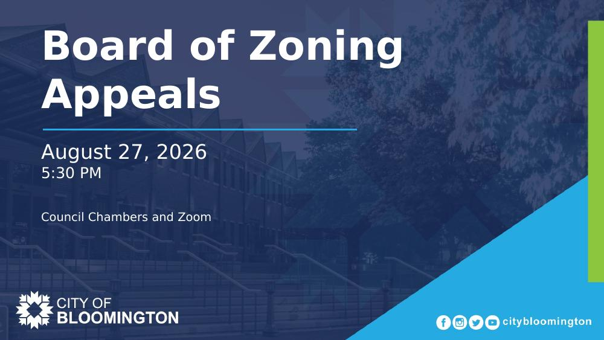
Slide 2 of 33
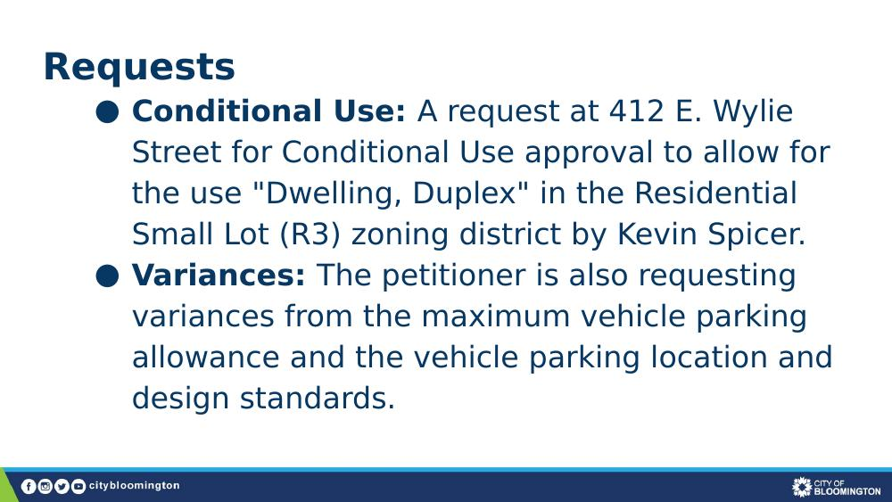
Requests
Conditional use: a request to allow the use "Dwelling, Duplex" in the Residential Small Lot (R3) zoning district, by Kevin Spicer.
Variances: the petitioner also requests variances from the maximum vehicle parking allowance and the vehicle parking location and design standards.
Slide 3 of 33
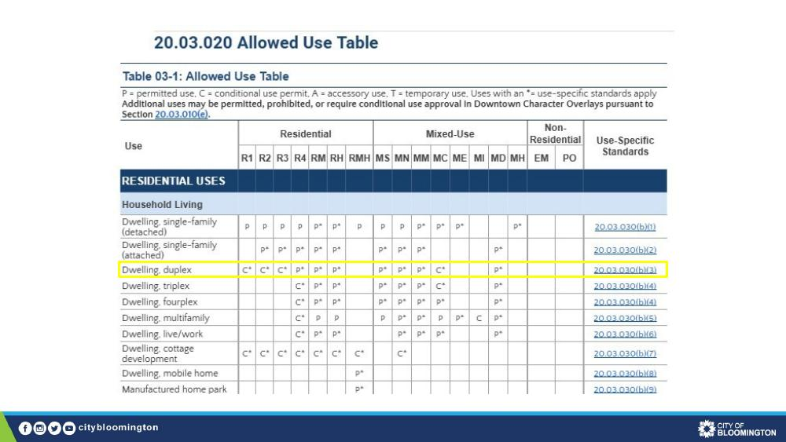
In the R3 district — where this property sits — a duplex requires Conditional Use approval. See UDO Section 20.03.020 for the complete table.
Slide 4 of 33
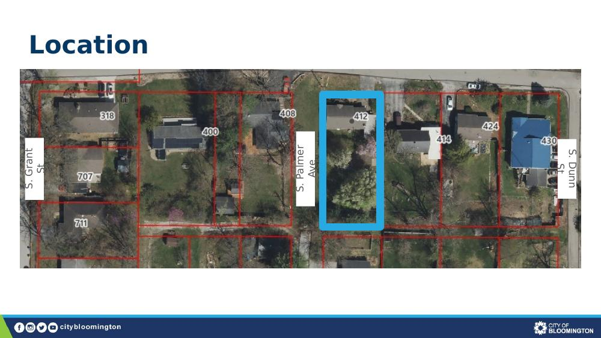
Location
Slide 5 of 33
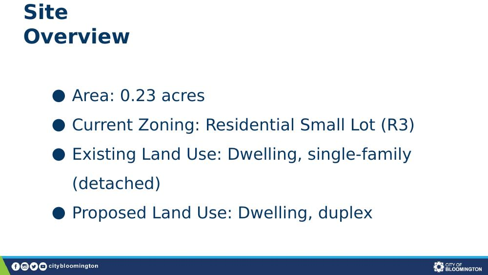
Site Overview
- Area: 0.23 acres
- Current zoning: Residential Small Lot (R3)
- Existing land use: Dwelling, single-family (detached)
- Proposed land use: Dwelling, duplex
Slide 6 of 33
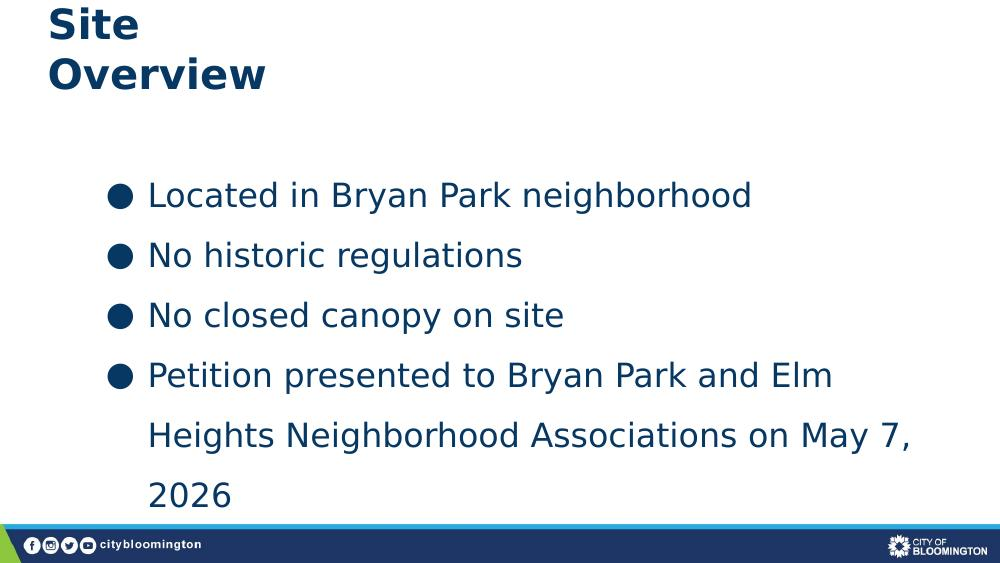
Site Overview (continued)
- Located in the Bryan Park neighborhood
- No historic regulations apply
- No closed canopy on site
- Presented to the Bryan Park and Elm Heights Neighborhood Associations on May 7, 2026
Slide 7 of 33
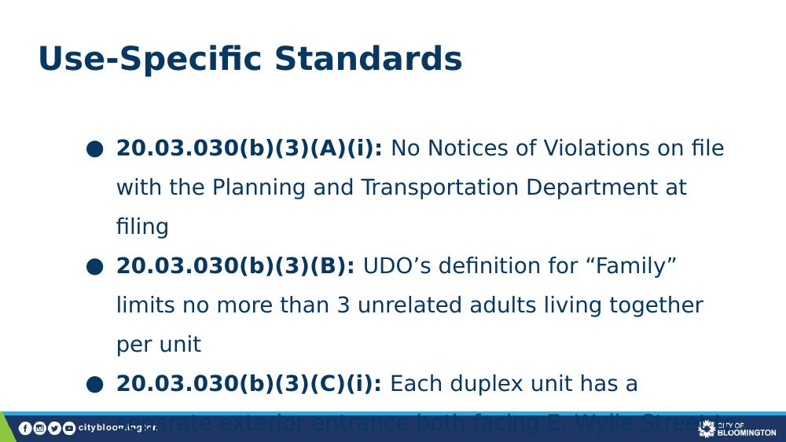
Use-Specific Standards
- 20.03.030(b)(3)(A)(i): no Notices of Violation on file with Planning and Transportation at filing.
- 20.03.030(b)(3)(B): the UDO's definition of "Family" limits occupancy to no more than 3 unrelated adults per unit.
- 20.03.030(b)(3)(C)(i): each duplex unit has a separate exterior entrance, both facing E. Wylie Street to the north.
Slide 8 of 33
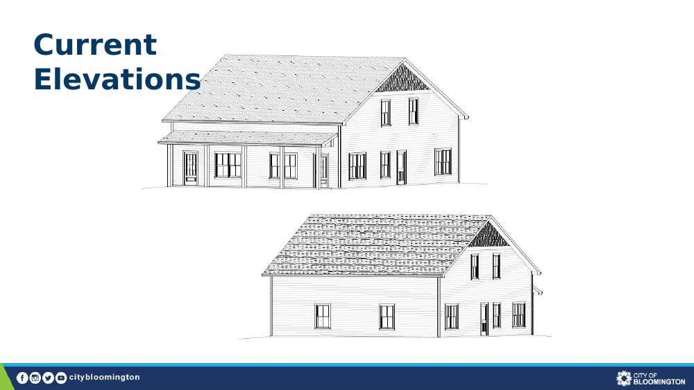
Current Elevations
Slide 9 of 33
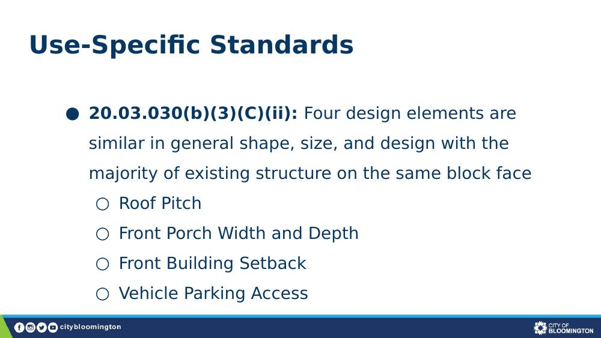
Use-Specific Standards (continued)
20.03.030(b)(3)(C)(ii) — four design elements matching the block face:
- Roof pitch
- Front porch width and depth
- Front building setback
- Vehicle parking access
Slide 10 of 33
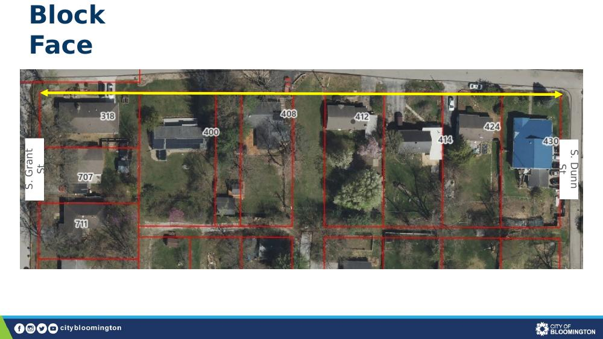
Block Face
Slide 11 of 33
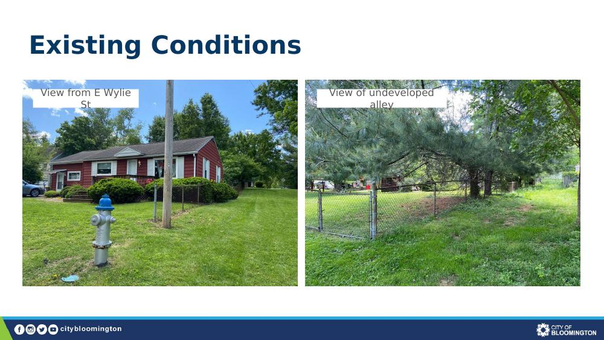
Existing Conditions
View from E. Wylie St; view of undeveloped alley.
Slide 12 of 33
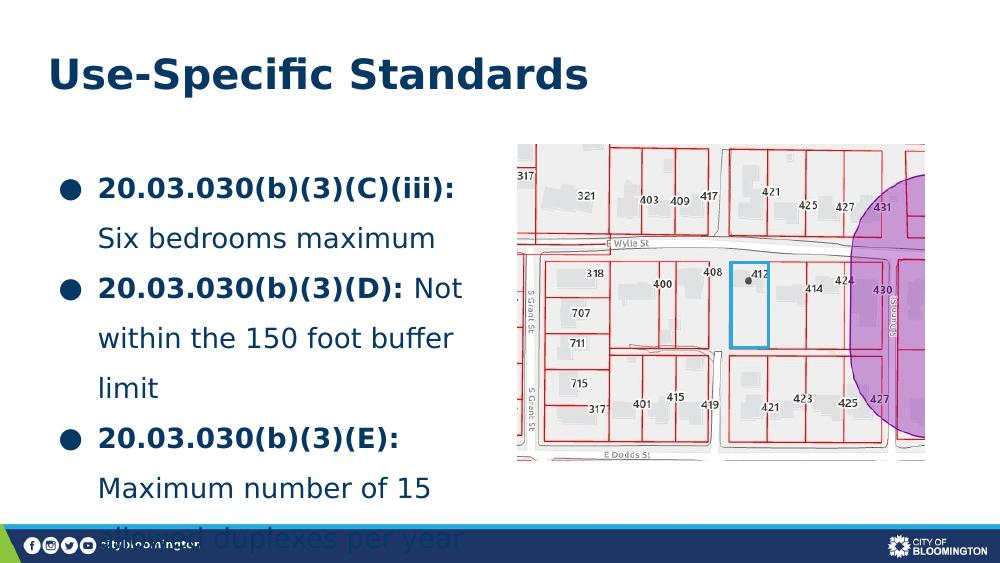
- 20.03.030(b)(3)(C)(iii): six bedrooms maximum.
- 20.03.030(b)(3)(D): not within the 150-foot buffer limit.
- 20.03.030(b)(3)(E): maximum of 15 allowed duplexes per year not exceeded.
Slide 13 of 33
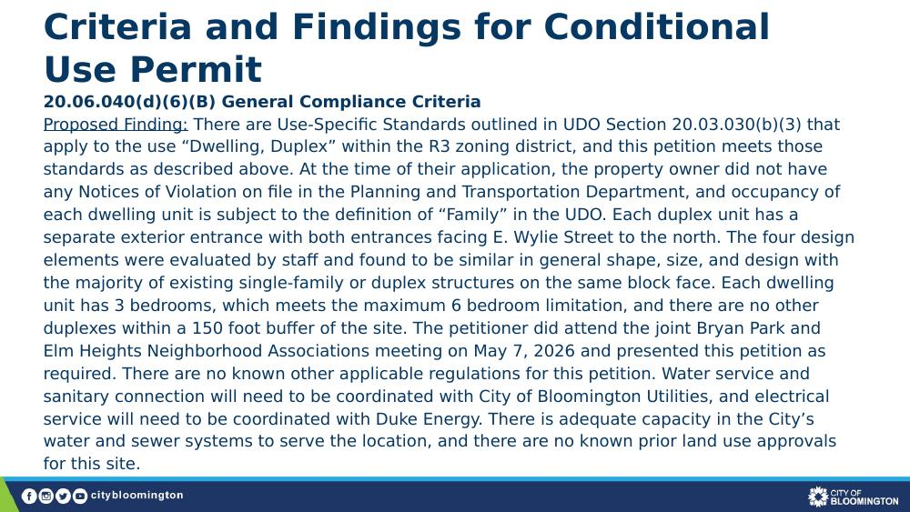
Criteria and Findings for Conditional Use Permit
20.06.040(d)(6)(B) — General Compliance Criteria
Proposed finding: the petition meets the applicable use-specific standards. No Notices of Violation are on file, occupancy of each unit is subject to the UDO's "Family" definition, each duplex unit has a separate exterior entrance, the four design elements match the block face, bedroom count and the 150' buffer requirement are both met, and the required neighborhood meeting was held on May 7, 2026. There are no other known applicable regulations. Water and sanitary service will be coordinated with City of Bloomington Utilities, electrical service with Duke Energy; adequate capacity exists, and there are no known prior land-use approvals for this site.
Slide 14 of 33
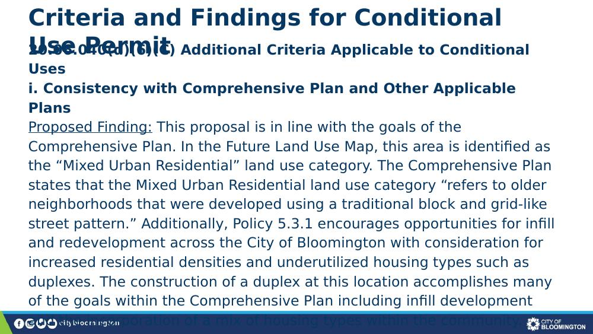
20.06.040(d)(6)(C)(i) — Consistency with the Comprehensive Plan
Proposed finding: the site's Future Land Use Map designation is "Mixed Urban Residential" — older neighborhoods built on a traditional block-and-grid pattern. Comprehensive Plan Policy 5.3.1 encourages infill and redevelopment with increased density and underutilized housing types such as duplexes; this proposal advances that goal.
Slide 15 of 33
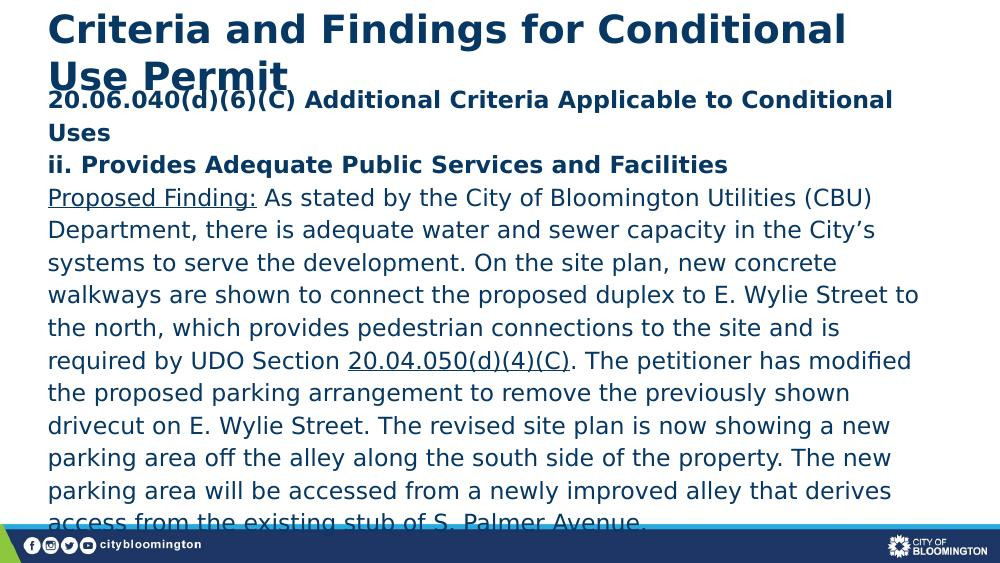
20.06.040(d)(6)(C)(ii) — Adequate public services and facilities
Proposed finding: City of Bloomington Utilities confirms adequate water and sewer capacity. New concrete walkways connect the duplex to E. Wylie Street as required by UDO Section 20.04.050(d)(4)(C). The revised parking arrangement removes the E. Wylie Street drivecut in favor of alley access from the improved stub of S. Palmer Avenue.
Slide 16 of 33
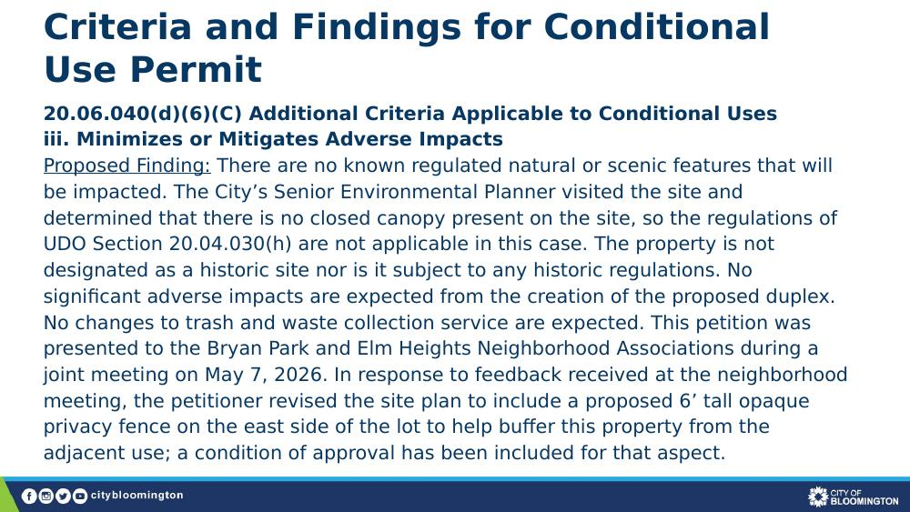
20.06.040(d)(6)(C)(iii) — Minimizes or mitigates adverse impacts
Proposed finding: no regulated natural or scenic features are affected; the site has no closed canopy and is not a historic site. No significant adverse impacts are expected. Following the May 7, 2026 neighborhood meeting, the petitioner added a proposed 6' opaque privacy fence along the east property line — carried forward as a condition of approval.
Slide 17 of 33
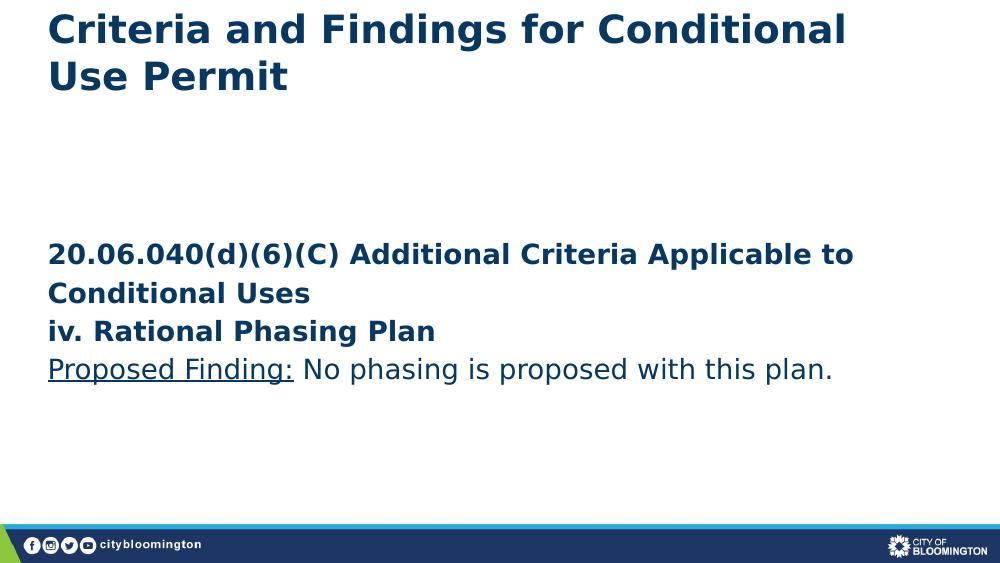
20.06.040(d)(6)(C)(iv) — Rational phasing plan
Proposed finding: no phasing is proposed.
Slide 18 of 33
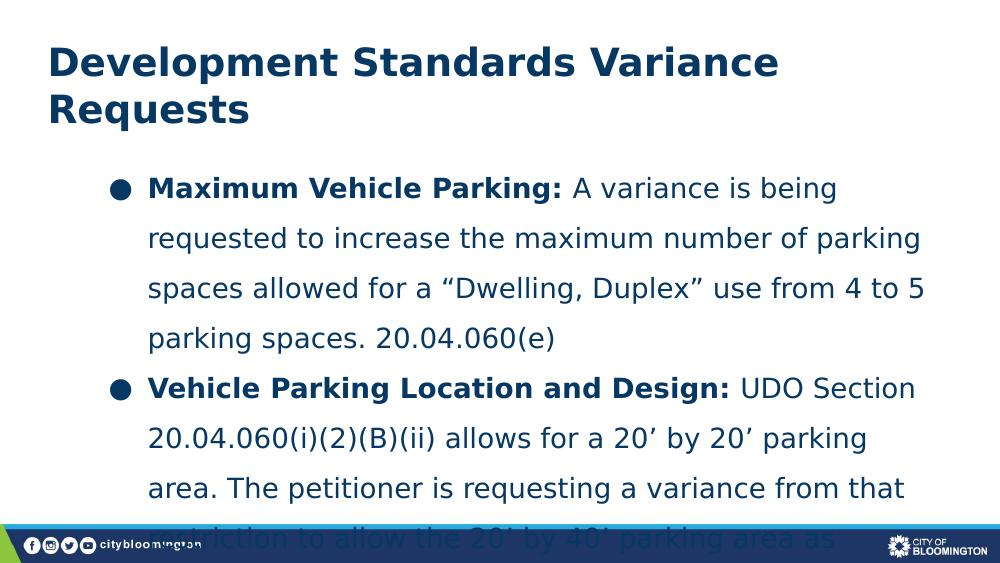
Development Standards Variance Requests
- Maximum vehicle parking (20.04.060(e)): increase the maximum parking spaces allowed for a duplex from 4 to 5.
- Vehicle parking location and design (20.04.060(i)(2)(B)(ii)): allow a 20' by 40' parking area where 20' by 20' is the maximum permitted.
Slide 19 of 33

Current Site Plan
Slide 20 of 33
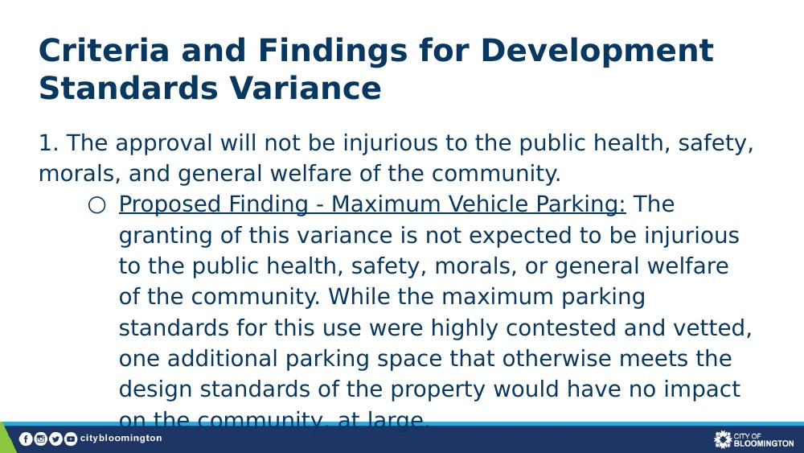
Criteria and Findings for Development Standards Variance
1. Not injurious to public health, safety, morals, and general welfare
Maximum Vehicle Parking: not expected to be injurious — one additional space that otherwise meets the design standards of the property would have no impact on the community at large.
Slide 21 of 33
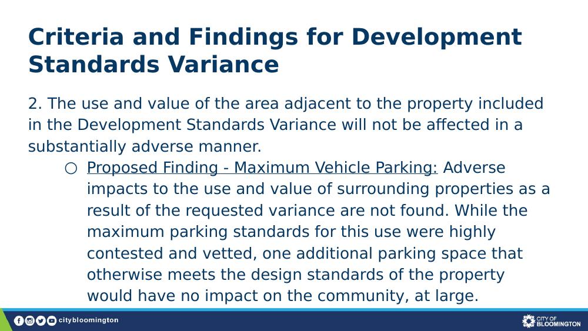
2. No substantially adverse effect on adjacent use and value
Maximum Vehicle Parking: no adverse impacts found — one additional compliant space would have no impact on the community at large.
Slide 22 of 33
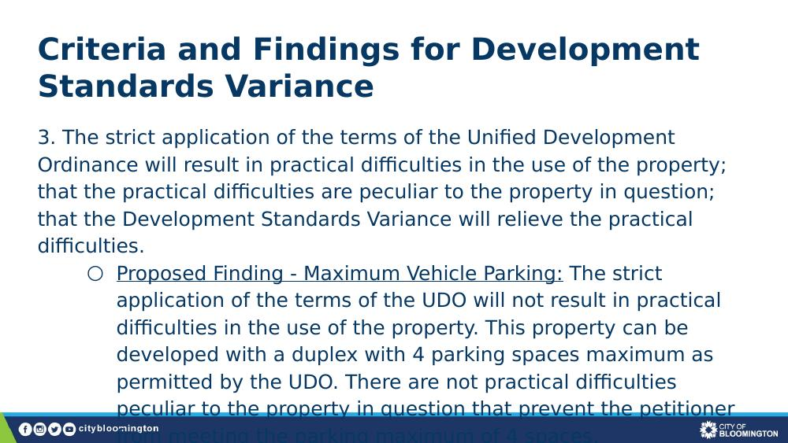
3. Practical difficulties peculiar to the property
Maximum Vehicle Parking: no practical difficulties found — the property can be developed with a compliant 4-space maximum.
Slide 23 of 33
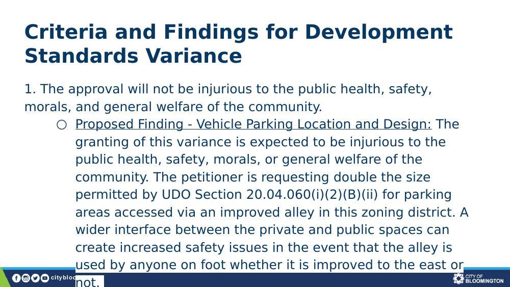
1. Not injurious to public health, safety, morals, and general welfare
Vehicle Parking Location and Design: is expected to be injurious — the request doubles the size UDO 20.04.060(i)(2)(B)(ii) permits for alley-accessed parking, increasing safety risk for anyone using the alley on foot.
Slide 24 of 33
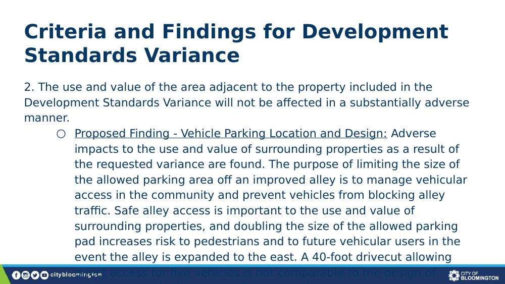
2. No substantially adverse effect on adjacent use and value
Vehicle Parking Location and Design: adverse impacts are found — a 40-foot drivecut serving five vehicles is not comparable to surrounding access design and increases risk if the alley is later extended east.
Slide 25 of 33
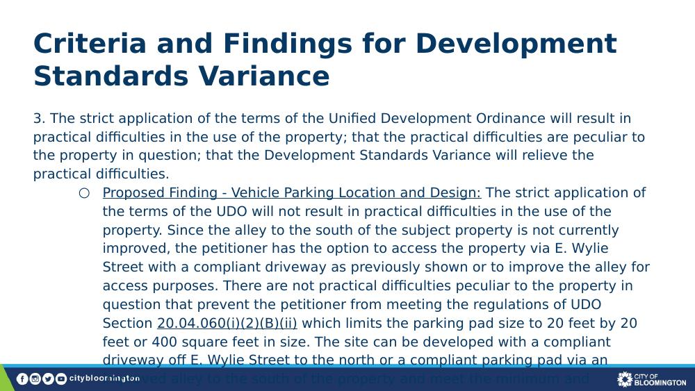
3. Practical difficulties peculiar to the property
Vehicle Parking Location and Design: no practical difficulties found — since the alley is currently unimproved, the petitioner has the option of a compliant driveway off E. Wylie Street or a compliant 20'-by-20' parking pad via the alley.
Slide 26 of 33
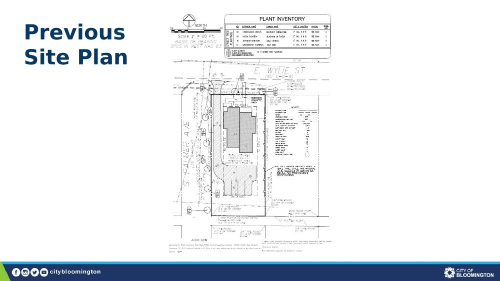
Previous Site Plan
Slide 27 of 33
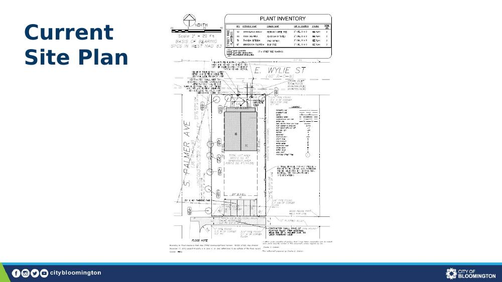
Current Site Plan (shown again)
Slide 28 of 33
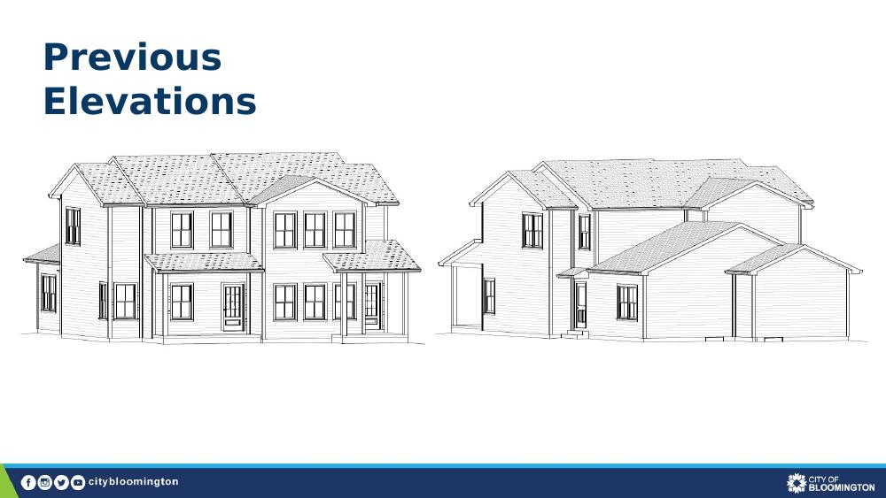
Previous Elevations
Slide 29 of 33

Current Elevations (shown again)
Slide 30 of 33
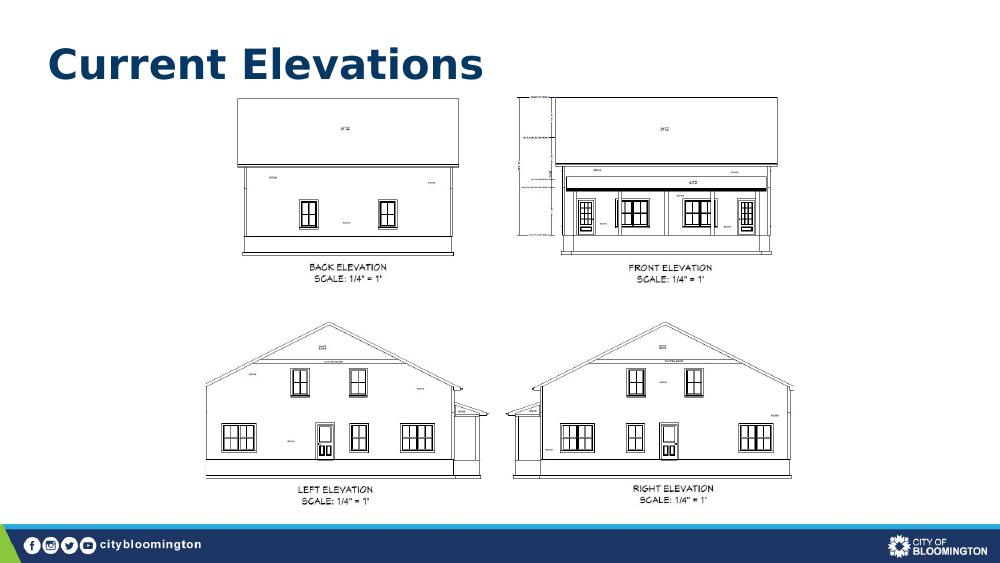
Current Elevations — all four sides
Slide 31 of 33
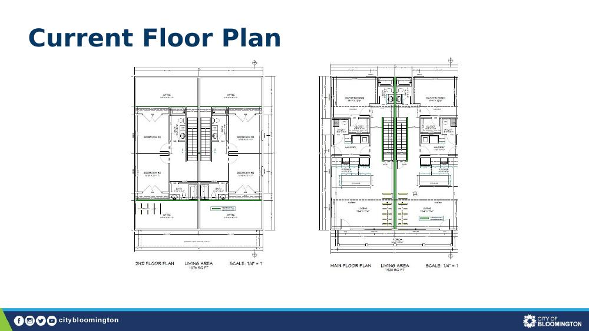
Current Floor Plan
Slide 32 of 33
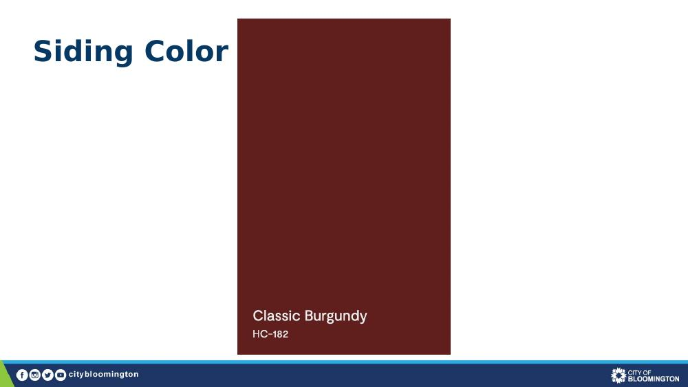
Siding Color
Classic Burgundy, HC-182.
Slide 33 of 33
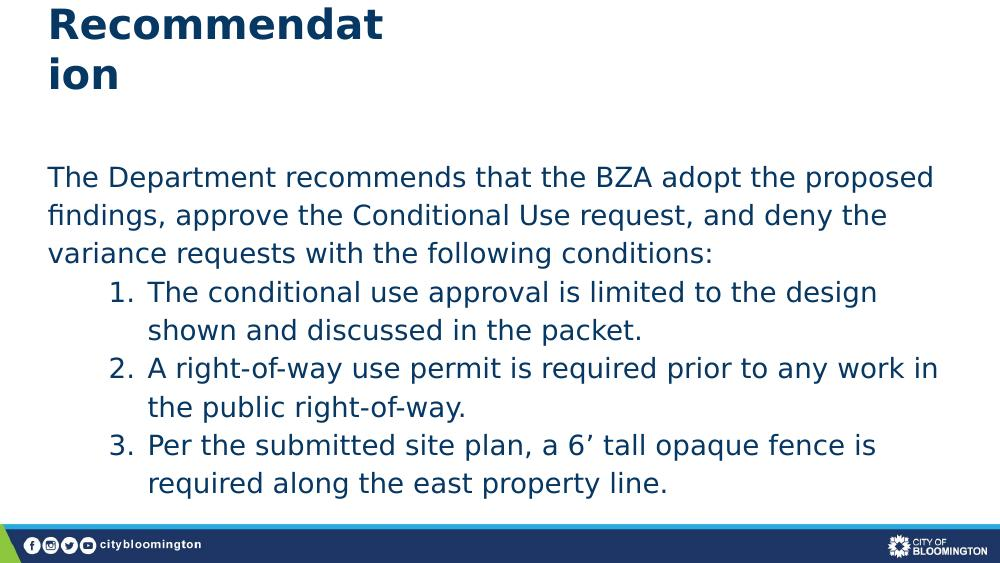
Recommendation
Staff recommends the BZA:
Adopt the proposed findings, approve the Conditional Use request, and deny both variance requests, subject to the following conditions:
- The conditional use approval is limited to the design shown and discussed in the packet.
- A right-of-way use permit is required prior to any work in the public right-of-way.
- Per the submitted site plan, a 6' tall opaque fence is required along the east property line.